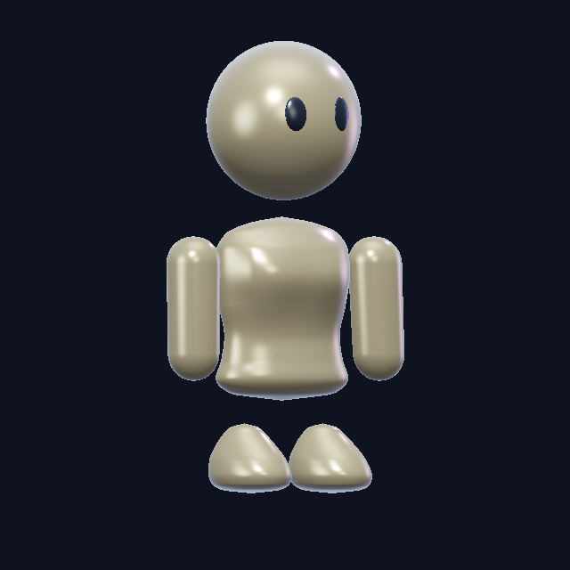
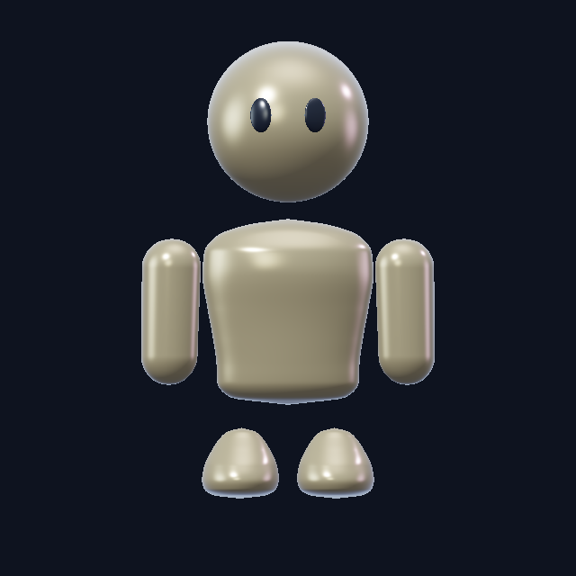
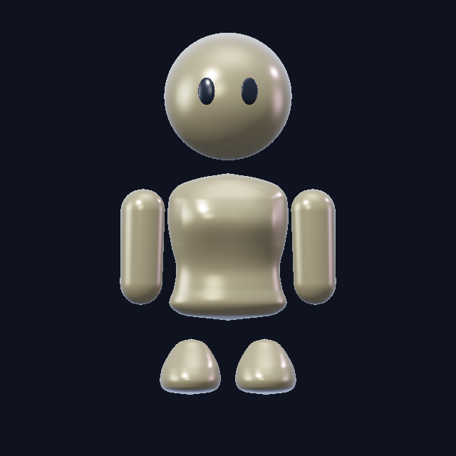
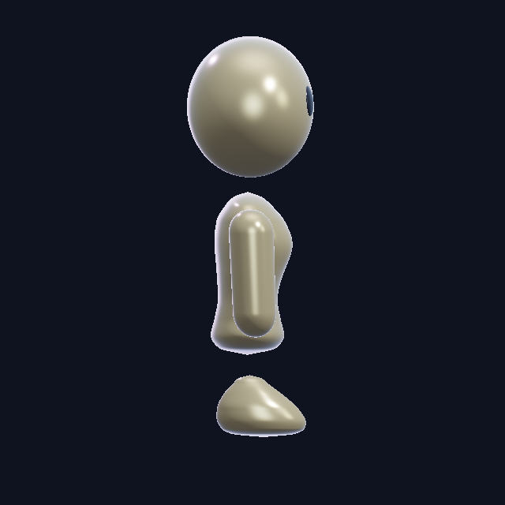
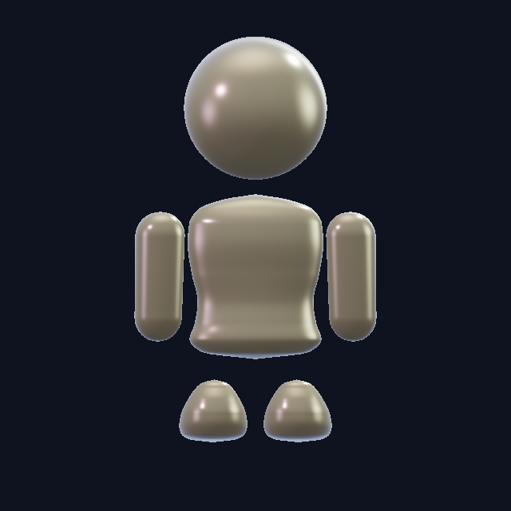
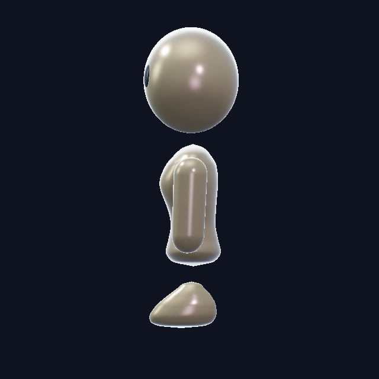
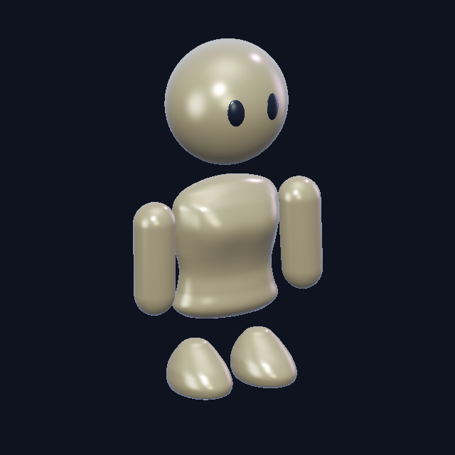

SEPARATE CONCEPT · 139Simple eyes. Two body directions.
The rounded head stays. Masculine has a broader upper torso with a gentle taper; feminine has soft chest volume and restrained waist shaping. Both use upright rounded arms and shorter, rounded feet.

Feminine · Light yellow · rendered viewImages load first. The rotatable model is optional.
Both builds

Masculine
FeminineFeminine · more angles

Side
Back
Opposite side
TiltedThese angle renders use Light yellow. The live model and main image follow the selected skin tone.
Our four skin tones
The exact saved palette117 pigment values and finish119 parameters are retained: polished skin with blue/lilac reflections. Browser and offline rendering approximate the Blender shader.
Recommended hair direction
Keep our existing hairstyle identities, rooted locks, finer strands and established hair materials. Start with feminine Straight or Ponytail and masculine Side part or Curly top.
- Fit the scalp and roots to the new round head; preserve the free lengths and the silhouette of each style.
- Keep clear, readable lock groups with softer flyaways. Hair should feel detailed beside the simple glossy body.
- Review top, side, rear and portrait size before adapting more styles. Long hair can bridge the floating gap, but should not hide the entire body separation.
Hair fitting is the next concept stage. No hair, clothing or accessory compatibility is claimed yet. Main integration137 and Avatar Studio remain unchanged.